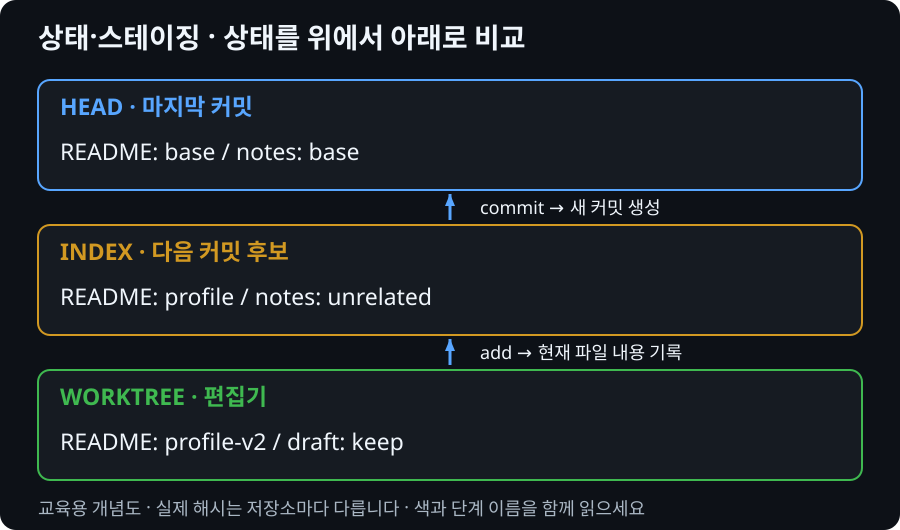
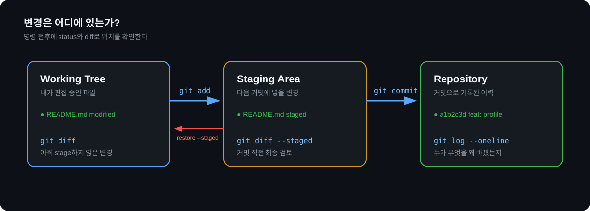

상태를 보고
작은 커밋 만들기
파일을 무조건 add하지 않고 Working Tree와 Staging Area를 확인해 목적별 커밋을 만듭니다.
명령 전에 내부 상태 읽기
Git은 파일 내용(blob), 디렉터리 구조(tree), 부모 커밋과 작성 정보가 있는 commit 객체로 스냅샷을 표현합니다. 파일 내용이 같으면 기존 객체를 재사용할 수 있습니다. 커밋은 매번 전체 폴더를 별도 복사하는 방식이 아닙니다.

문제 상황
프로젝트 파일 여러 개를 한꺼번에 add하면 비밀정보나 관계없는 변경이 같이 올라갑니다. 이번 실습에서는 “무엇을 커밋하는지”를 먼저 확인합니다.

준비
team-profile-starter 폴더를 개인 작업 폴더에 복사하고 Git Bash에서 이동합니다. 원본 starter는 수정하지 않습니다. starter ZIP 다운로드
cd 복사한-폴더 git init -b main git config user.name git config user.email
Checkpoint
이름과 이메일이 비어 있으면 강사와 확인한 뒤 설정합니다. 다른 사람의 공용 PC 값은 덮어쓰지 않습니다.
미션 1 — 첫 상태 예측
실행 전
git status --short에 README, Java, .gitignore가 어떻게 표시될지 먼저 예상합니다.
실행 후
실제 결과를 보고 예상과 다른 이유를 설명합니다.
git status --short git check-ignore -v .env
막혔을 때 힌트 1
숨김 파일을 포함해 폴더에 무엇이 있는지 먼저 확인합니다. .env는 starter에 없으므로 직접 값 없는 파일을 만들되 실제 비밀번호는 적지 않습니다.
미션 2 — 목적별 커밋
- README의 팀 목표 문장을 수정합니다.
- HelloTeam.java 출력 문장을 수정하고 실행합니다.
- README만 stage하고 staged diff를 확인합니다.
- README와 Java 변경을 서로 다른 커밋으로 만듭니다.
git diff git add README.md git diff --staged git commit -m "docs: define team goal" javac src/HelloTeam.java java -cp src HelloTeam git add src/HelloTeam.java git commit -m "feat: update team greeting" git log --oneline --decorate -3
실패 재현 — 잘못 stage한 파일
README와 Java를 다시 조금 수정한 뒤 둘 다 stage합니다. Java는 다음 커밋에서 제외해야 한다고 가정합니다.
git add README.md src/HelloTeam.java git diff --staged git restore --staged src/HelloTeam.java git status --short git diff --staged
확인
restore --staged는 Java 파일의 변경을 삭제하지 않습니다. stage에서만 내립니다. 실제 파일이 남았는지 git diff로 확인합니다.
실습 확인과 Explain Gate
| 확인할 결과 | PASS 기준 |
|---|---|
| status, diff, staged diff | 세 결과의 대상이 다름을 설명 |
| 커밋 2개 이상 | 변경 목적별로 분리 |
| .gitignore | class, .env가 추적되지 않음 |
| 실행 결과 | Java 변경과 출력 일치 |
말로 설명
- add와 commit은 무엇이 다른가?
- 현재 다음 커밋에 들어갈 변경을 어떻게 확인하는가?
- restore와 restore --staged는 무엇이 다른가?
모듈 완료 확인
버튼은 자기 기록입니다. 실제 PASS는 위 실행 결과와 설명을 강사가 확인한 뒤 판정합니다.
완료 상태는 현재 브라우저에 저장됩니다.